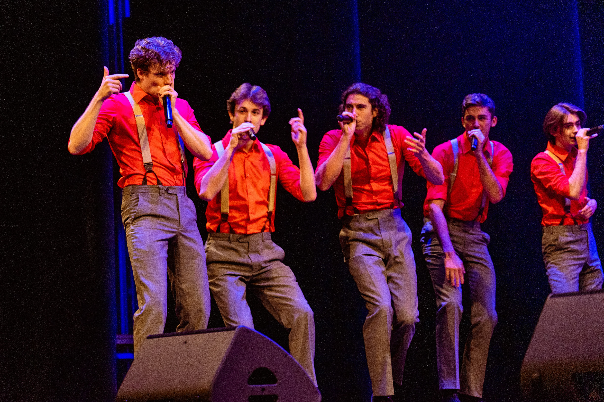

Meet the Group
- Blaise Russo
- President, Junior, Baritone, Political Science
- Ryan Nolan
- Vice President, Junior, Tenor, Music Education
- Jared Dutelle
- Music Director, Junior, Baritone/Tenor, Communication Science and Rhetorical Studies
- Rahul Ravi
- Business Manager, Junior, Counter-Tenor, Biology
- Andrew Karbusicky
- Assistant Music Director, Sophomore, Baritone, Mechanical Engineering
- Roberts Jansons
- Financial Manager, Sophomore, Baritone, Mechanical Engineering
- Jeremiah Eenigenburg
- Public Relations Manager, Junior, Tenor, Biology
- Grant Schwab
- Senior, Tenor, Electrical Engineering
- Sarat Saragam
- Junior, Counter-Tenor, Computer Science
- Evan McKenzie
- Junior, Tenor, Political Science
- Zack Van Dreese
- Senior, Vocal Percussion, Civil Engineering
- Greg Whalen
- Senior, Bass, Geography
- Isaac Krahn
- Senior, Bass, Real Estate
- Markus Priede
- Sophomore, Bass/Vocal Percussion, Computer Science
- Erick Paiz-Handrick
- Sophomore, Counter-Tenor, Biology
- Michael Fiskey
- Freshman, Tenor, Computer Science
- Ernst Stolzenburg
- Sophomore, Counter-Tenor, Engineering Mechanics
